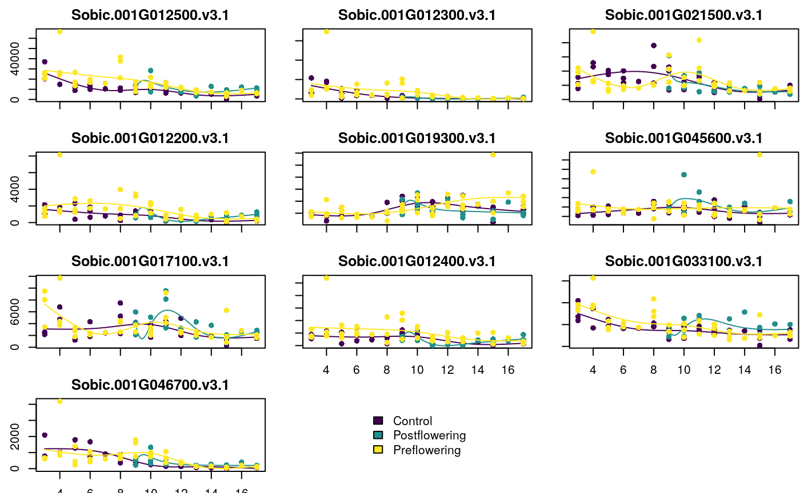
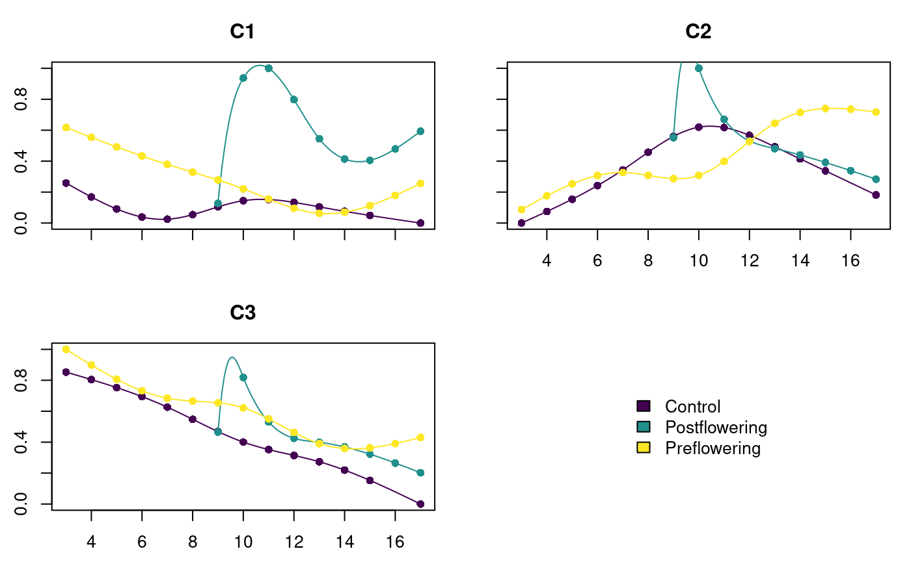

documentation.RmdThe package moanin was developed to provide a simple and efficient workflow for long time-course gene expression data. It makes it simple to do differential expression between conditions based on either individual condition comparisons per time point, or by fitting spline functions per gene. There are also functions to help with clustering and visualization.
We do not detail all of the features of the package here, but some of the main functions. See our more indepth workflow paper at https://github.com/NelleV/2019timecourse-rnaseq-pipeline.
We will work with time course data available in the accompanying timecoursedata package. This is mRNA-Seq timecourse data on a plant, sorghum. The plants were sampled every week for 17 weeks. The plants were of two different varieties (i.e. different genotypes), and under three different watering conditions:
This data is available on both the leaf and the root sampled from the same plant. We will concentrate on the leaf samples, available as a dataset varoquaux2019leaf.
## [1] "data" "meta"The data element contains the gene expression data, while the meta data consists of information regarding the samples.
For simplicity, we are going to focus on comparing the three different watering conditions within the “BT642” variety (the variety known for comparative tolerance of pre-flowering drought). We are also going to drop Week 2, which is only measured in the control samples.
whSamples<-with(varoquaux2019leaf$meta,which(Genotype=="BT642" & Week >2)) preData<-varoquaux2019leaf$data[,whSamples] preMeta<-varoquaux2019leaf$meta[whSamples,] dim(preData)
## [1] 34211 97dim(preMeta)
## [1] 97 22moanin classThe first step is to create a moanin class, which uses our meta data to create the needed information for future analysis. Specifically, in addition to storing the meta information, the function create_moanin_model will define a splines basis for future calculations. By default the model is given as a separate spline basis for each level of a factor Group, plus a group intercept with the following R formula
~Group:ns(Timepoint, df=4) + Group + 0
moaninObject<-create_moanin_model(data=preData,meta=preMeta, group_variable="Condition", time_variable = "Week") moaninObject
## Moanin object on 97 samples containing the following information:
## Group variable given by 'Condition' with the following levels:
## Control Postflowering Preflowering
## 37 21 39
## Time variable given by 'Week'
## Basis matrix with 15 basis_matrix functions
## Basis matrix was constructed with the following spline_formula
## ~Condition + Condition:splines::ns(Week, df = 4) + 0
##
## Information about the data (a SummarizedExperiment object):
## class: SummarizedExperiment
## dim: 34211 97
## metadata(0):
## assays(1): ''
## rownames(34211): Sobic.001G000100.v3.1 Sobic.001G000200.v3.1 ...
## Sobic.K044420.v3.1 Sobic.K044505.v3.1
## rowData names(0):
## colnames(97): 0622162L06 0622162L14 ... 0928169L11 0928169L19
## colData names(23): Barcode libraryName ... Group WeeklyGroupOne type of DE analysis we can do is to compare our watering conditions to each other, for every time point. We do this via a call to limma for the DE analysis, but before we can do this, we need to set up the appropriate contrasts. For example, “Preflowering - Control” (see ?makeContrasts in the limma package). We provide a function to do this for every week, so as to avoid this step.
preContrasts = create_timepoints_contrasts(moaninObject,"Preflowering", "Control")
Notice we also get a warning that timepoint 16 is missing in our Control Samples (in fact, some of these time points only have a single observations per time point, which is not particularly appropriate for DE analysis per week).
We can also create contrasts to compare Postflowering and Control, and Preflowering and Postflowering. We get many warnings here, because Post-flowering only has samples after week 9.
postContrasts = create_timepoints_contrasts(moaninObject,"Postflowering", "Control" ) prepostContrasts = create_timepoints_contrasts(moaninObject,"Postflowering", "Preflowering")
We can run the DE analysis, setting use_voom_weights=TRUE to make use of limma correction for low-counts. We will subset to just the first 500 genes for illustration purposes, though the full set of genes does not take very long
weeklyPre<-DE_timepoints(moaninObject[1:500,], contrasts=c(preContrasts,postContrasts,prepostContrasts), use_voom_weights=TRUE)
The results give the raw p-value (_pval), the FDR adjusted p-values (_qval), and the estimate of log-fold-change (_lfc) for each week (3 columns for each of the 31 contrasts):
dim(weeklyPre)
## [1] 500 93head(weeklyPre[,1:10])
## Preflowering.3-Control.3_pval
## Sobic.001G000100.v3.1 0.76935240
## Sobic.001G000200.v3.1 0.01705126
## Sobic.001G000300.v3.1 0.75896765
## Sobic.001G000400.v3.1 0.23770107
## Sobic.001G000501.v3.1 0.75896765
## Sobic.001G000700.v3.1 0.05734872
## Preflowering.3-Control.3_qval
## Sobic.001G000100.v3.1 0.9806377
## Sobic.001G000200.v3.1 0.1792723
## Sobic.001G000300.v3.1 0.9795879
## Sobic.001G000400.v3.1 0.6740071
## Sobic.001G000501.v3.1 0.9795879
## Sobic.001G000700.v3.1 0.3530203
## Preflowering.3-Control.3_lfc
## Sobic.001G000100.v3.1 2.4312650
## Sobic.001G000200.v3.1 1.5852637
## Sobic.001G000300.v3.1 -1.9235186
## Sobic.001G000400.v3.1 0.9811749
## Sobic.001G000501.v3.1 -1.0133240
## Sobic.001G000700.v3.1 -0.6885880
## Preflowering.4-Control.4_pval
## Sobic.001G000100.v3.1 0.2290217
## Sobic.001G000200.v3.1 0.9860256
## Sobic.001G000300.v3.1 0.2083560
## Sobic.001G000400.v3.1 0.9176221
## Sobic.001G000501.v3.1 0.2083560
## Sobic.001G000700.v3.1 0.1970270
## Preflowering.4-Control.4_qval
## Sobic.001G000100.v3.1 0.6639340
## Sobic.001G000200.v3.1 0.9996942
## Sobic.001G000300.v3.1 0.6398885
## Sobic.001G000400.v3.1 0.9921867
## Sobic.001G000501.v3.1 0.6398885
## Sobic.001G000700.v3.1 0.6282489
## Preflowering.4-Control.4_lfc
## Sobic.001G000100.v3.1 1.0249975
## Sobic.001G000200.v3.1 1.1352912
## Sobic.001G000300.v3.1 0.6779068
## Sobic.001G000400.v3.1 -0.4052482
## Sobic.001G000501.v3.1 3.0543973
## Sobic.001G000700.v3.1 -2.5260550
## Preflowering.5-Control.5_pval
## Sobic.001G000100.v3.1 0.64964783
## Sobic.001G000200.v3.1 0.03384720
## Sobic.001G000300.v3.1 0.63455782
## Sobic.001G000400.v3.1 0.62792598
## Sobic.001G000501.v3.1 0.63455782
## Sobic.001G000700.v3.1 0.08759985
## Preflowering.5-Control.5_qval
## Sobic.001G000100.v3.1 0.9465706
## Sobic.001G000200.v3.1 0.2640320
## Sobic.001G000300.v3.1 0.9417509
## Sobic.001G000400.v3.1 0.9405412
## Sobic.001G000501.v3.1 0.9417509
## Sobic.001G000700.v3.1 0.4388142
## Preflowering.5-Control.5_lfc
## Sobic.001G000100.v3.1 0.9699917
## Sobic.001G000200.v3.1 -5.4320308
## Sobic.001G000300.v3.1 1.7300535
## Sobic.001G000400.v3.1 1.2150398
## Sobic.001G000501.v3.1 -0.7634983
## Sobic.001G000700.v3.1 -0.7326084
## Preflowering.6-Control.6_pval
## Sobic.001G000100.v3.1 0.9438199
## Sobic.001G000200.v3.1 0.3823328
## Sobic.001G000300.v3.1 0.9412143
## Sobic.001G000400.v3.1 0.3198618
## Sobic.001G000501.v3.1 0.9412143
## Sobic.001G000700.v3.1 0.6082270The results of such a weekly analysis can be quite difficult to interpret, the number of replicates per week can be quite low, and different numbers of replicates in different weeks can make it difficult to compare the analysis across weeks.
An alternative approach is to fit a smooth spline to each gene per group, and perform differential tests as to whether there are differences between the spline functions between two groups. We provide this function in DE_timecourse, where the user provides a string of comparisons that they wish to make:
timecourseContrasts<-c("Preflowering-Control","Postflowering-Control","Postflowering-Preflowering") splinePre<-DE_timecourse(moaninObject[1:500,], contrasts=timecourseContrasts, use_voom_weights=FALSE)
Each contrast has a pval and a qval column:
head(splinePre)
## Preflowering-Control_pval Preflowering-Control_qval
## Sobic.001G000100.v3.1 0.8720704 0.8928694
## Sobic.001G000200.v3.1 0.3330619 0.4633905
## Sobic.001G000300.v3.1 NaN NaN
## Sobic.001G000400.v3.1 0.1640645 0.2873066
## Sobic.001G000501.v3.1 NaN NaN
## Sobic.001G000700.v3.1 0.7138069 0.7716831
## Postflowering-Control_pval Postflowering-Control_qval
## Sobic.001G000100.v3.1 0 0
## Sobic.001G000200.v3.1 0 0
## Sobic.001G000300.v3.1 NaN NaN
## Sobic.001G000400.v3.1 0 0
## Sobic.001G000501.v3.1 NaN NaN
## Sobic.001G000700.v3.1 0 0
## Postflowering-Preflowering_pval
## Sobic.001G000100.v3.1 0
## Sobic.001G000200.v3.1 0
## Sobic.001G000300.v3.1 NaN
## Sobic.001G000400.v3.1 0
## Sobic.001G000501.v3.1 NaN
## Sobic.001G000700.v3.1 0
## Postflowering-Preflowering_qval
## Sobic.001G000100.v3.1 0
## Sobic.001G000200.v3.1 0
## Sobic.001G000300.v3.1 NaN
## Sobic.001G000400.v3.1 0
## Sobic.001G000501.v3.1 NaN
## Sobic.001G000700.v3.1 0There is not a log-fold change column, because it is more complicated to define the log-fold change over a series of timepoints, where potentially the means may even switch from being over-expressed to under-expressed. We provide a function estimate_log_fold_change which gives the option of estimating several kinds of log-fold-change. We demonstrate with the method abs_sum, which gives the sum of the absolute difference in the means across time points:
log_fold_change_timepoints = estimate_log_fold_change(moaninObject[1:500,], contrasts=timecourseContrasts, method="sum") head(log_fold_change_timepoints)
## Preflowering-Control Postflowering-Control
## Sobic.001G000100.v3.1 -0.3333333 -0.3333333
## Sobic.001G000200.v3.1 212.6666667 7.0000000
## Sobic.001G000300.v3.1 0.0000000 0.0000000
## Sobic.001G000400.v3.1 103.0000000 78.3333333
## Sobic.001G000501.v3.1 0.0000000 0.0000000
## Sobic.001G000700.v3.1 -68.3333333 875.0000000
## Postflowering-Preflowering
## Sobic.001G000100.v3.1 0.00000
## Sobic.001G000200.v3.1 -205.66667
## Sobic.001G000300.v3.1 0.00000
## Sobic.001G000400.v3.1 -24.66667
## Sobic.001G000501.v3.1 0.00000
## Sobic.001G000700.v3.1 943.33333See ?estimate_log_fold_change to see the full set of methods.
The package moanin also provides a simple utility function (plot_splines_data) to visualize gene time-course data from different conditions. We use this to plot the 10 genes with the largest log-fold-change in Preflowering-Control contrast (since we only looked at the first top 500, these aren’t representative of the overall signal in the data set, which is much stronger).
whSig = which(splinePre[,"Preflowering-Control_qval"]<0.05) deGenes = order(abs(log_fold_change_timepoints)[whSig,"Preflowering-Control"],decreasing=TRUE)[1:10] plot_splines_data(moaninObject[whSig, ][deGenes,], smooth=TRUE, mar=c(1.5,2.5,2,0.1))

We can also cluster the data based on their spline fits. Here we would like to work with the log transform of the counts which are stored in moaninObject, so we set log_transform=TRUE.
# First fit the kmeans clusters kmeans_clusters = splines_kmeans(moaninObject[1:500,], n_clusters=3, random_seed=42, n_init=20)
We then use the plot_splines_data function, only now applied to the centroids of the kmeans clustering, to visualize the centroids of each cluster obtained with the splines k-means model.
plot_splines_data( data=kmeans_clusters$centroids, moaninObject, smooth=TRUE)

Because there is variability in how well the genes fit a cluster, we would like to be able to score how well a gene fits a cluster. Furthermore, we often chose a subset of genes based on a filtering process, and we would like to have a mechanism to assign all genes to a cluster.
The function splines_kmeans_score_and_label gives a goodness-of-fit score between each gene and each cluster.
scores_and_labels = splines_kmeans_score_and_label(object=moaninObject,data=preData[1:2000,], kmeans_clusters=kmeans_clusters)
Notice that we used more genes here (first 2000), even though previously we only used first 500 to make the clusters. These choices were unrealistic, since in practice we would probably pick high variable genes or differentially expressed genes, rather than the first 500, but at least give a sense of how this works.
The result is a list with elements scores and labels. scores gives the goodness-of-fit score between each gene and each cluster
head(scores_and_labels$scores)
## [,1] [,2] [,3]
## Sobic.001G000100.v3.1 0.9979535 0.9867139 0.9999825
## Sobic.001G000200.v3.1 0.9999940 0.9030656 0.9999523
## Sobic.001G000300.v3.1 1.0000000 1.0000000 1.0000000
## Sobic.001G000400.v3.1 1.0000000 0.8524792 1.0000000
## Sobic.001G000501.v3.1 1.0000000 1.0000000 1.0000000
## Sobic.001G000700.v3.1 0.9689555 0.9146831 0.9965017labels gives the best cluster assignment for each gene, but only if its score in its best cluster is above a certain threshold (see ?splines_kmeans_score_and_label)
head(scores_and_labels$labels)
## Sobic.001G000100.v3.1 Sobic.001G000200.v3.1 Sobic.001G000300.v3.1
## NA 2 NA
## Sobic.001G000400.v3.1 Sobic.001G000501.v3.1 Sobic.001G000700.v3.1
## 2 NA 2## [1] 1000